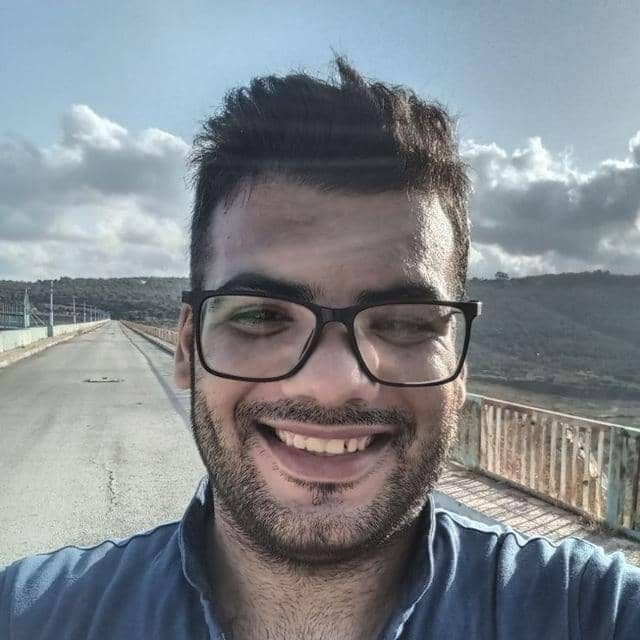
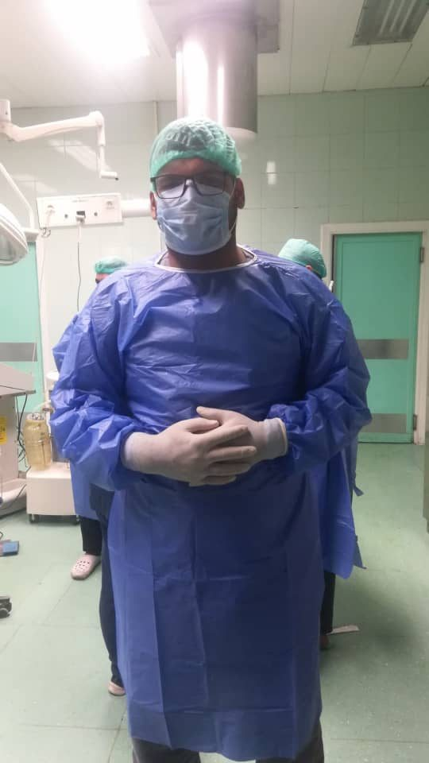
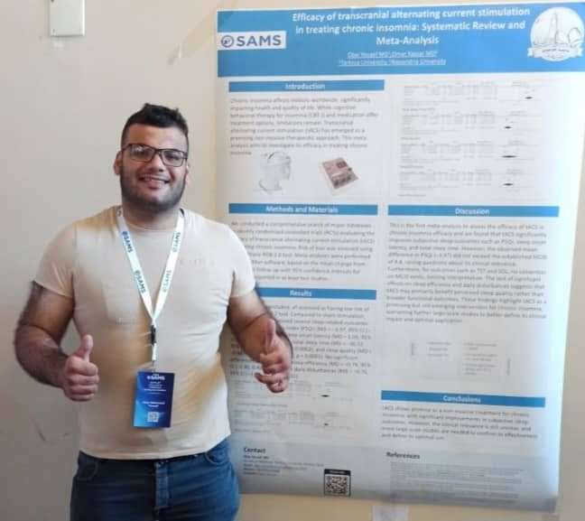

Obai Yousef, MD
Physician & Neuroscience Researcher
Bridging clinical practice and neuroscience research
Download CV ContactAbout
I am a physician interested in understanding neurological disorders and how clinical data can help us better understand the brain. My research experience has mainly focused on Parkinson’s disease, movement disorders, and related clinical questions.
I began my research journey through systematic reviews and meta-analysis, which gave me a strong foundation in scientific literature, data synthesis, and evidence-based research. I am now expanding toward clinical research and quantitative data analysis, with a growing interest in neuroimaging, neurophysiology, and programming with R.
I am particularly interested in research that connects clinical observations with neuroscience and data-driven methods. I am always looking to learn new approaches, collaborate with researchers from different backgrounds, and contribute to projects where I can develop as a physician and researcher.
- 2018–2024MD
Tartous University — Very Good academic standing · 82%
- 2022–PresentResearch
Negida Academy — contributing to and leading research projects in neurology and neurosurgery.
- 2025–2026Clinical Experience
Latakia University Hospital — clinical training across several surgical departments, with a primary focus on neurosurgery, alongside experience in surgical emergency care and other specialties.
- 2026–PresentDeveloping Research Skills
Building experience in primary clinical research, clinical data analysis, and medical imaging.
In progress

Research Interests
- Parkinson's Disease
- Deep Brain Stimulation (DBS)
- Movement Disorders
- Clinical Neuroscience
- Neuroimaging
- Neuromodulation
- Primary Clinical Research
Selected Research
2026
- Impact of Subthalamic Nucleus Deep Brain Stimulation on Gastrointestinal Symptoms and Gastric Emptying in Parkinson's Disease: A Systematic Review and Meta-AnalysisAbbas A, Sabet H, Hawas Y, Obai Yousef, Kassar O, AbdelMeseh M, Khatatbeh AA, Lashin B, Awad H, Cloud LJ, Negida A, Raslan AMNeuromodulation, 2026 View on PubMed →
- Efficacy and safety of apomorphine in the treatment of Parkinson's disease: a systematic review and meta-analysis of randomized controlled trialsAbouelmagd ME, Abbas A, Obai Yousef, Abdelrahman Hassan A, Kassar O, Sarhan K, Zakria Alnajjar A, Sabet H, Ahmed Zanaty M, Awad H, Kashbour M, Almuzghi F, Barrett MJ, Berman B, Negida ATherapeutic Advances in Neurological Disorders, 2026 View on PubMed →
- Proton pump inhibitors and risk of Parkinson's disease: A systematic review and meta-analysisMakhlouf HA, Obai Yousef, Kassar O, Aldemerdash MA, Sabet H, Meshref MNaunyn-Schmiedeberg's Archives of Pharmacology, 2026 View on PubMed →
2025
- The Effectiveness of Melatonin for Sleep Disturbances in Parkinson's Disease: Systematic Review and Meta-AnalysisObai Yousef, Abouelmagd ME, Khaddam H, Shbani A, Yousef R, Meshref M, Hanafi IJournal of Sleep Research, 2025 View on PubMed →
- Effectiveness of non-invasive vagal nerve stimulation in Parkinson's disease: A comprehensive systematic review and meta-analysisAbouelmzagd ME, Obai Yousef, Ibrahim IA, Elshahat AJournal of Clinical Neuroscience, 2025 View on PubMed →
- Subthalamic nucleus versus globus pallidus internus deep brain stimulation in the treatment of dystonia: A systematic review and meta-analysis of safety and efficacyObai Yousef, Abbas A, Abdelmeseh M, Qafesha RM, Nabil Y, Elrosasy A, Shbani A, Negida A, Berman BDJournal of Clinical Neuroscience, 2025 View on PubMed →
- Delirium after deep brain stimulation for Parkinson's disease: a meta-analysis of incidence and risk factorsObai Yousef, Abouelmagd ME, Abbas A, Elrosasy A, Shbani A, Raslan AMNeurosurgical Review, 2025 View on PubMed →
2024
- A rare coexistence of a non-dysraphic intradural lipoma and a cyst in the lumbar spine - A case report and literature reviewKhaddam H, Shbani A, Obai Yousef, Hussein A, Salman I, Salman IInternational Journal of Surgery Case Reports, 2024 View on PubMed →
Research Skills
R & Jamovi — Statistical Analysis
- Data cleaning
- Descriptive statistics
- Data visualization
- Correlation analysis
- Hypothesis testing
- Regression
- Survival analysis
- Cox regression
Research Methods & Tools
- Systematic reviews
- Meta-analysis
- Literature search
- Data extraction
- Risk of bias assessment
- RevMan
- Rayyan
- Zotero
Neuroscience
- Neuroanatomy
- Neurysiologyoph
- Neurological examination
- Basic CT/MRI/EEG/fMRI concepts
Conferences & Presentations

Poster presentation, SAMS 23rd conference- 2025 · DamascusNeuroscience Retreat
Presented: "How to Conduct a Successful Systematic Review"
- 2025 · DamascusSAMS Neuroscience Day
Oral presentation: "Melatonin and Parkinson's Disease: A Systematic Review and Meta-Analysis"
- 2025 · DamascusAvicenna Journal of Medicine
Efficacy of Transcranial Alternating Current Stimulation in Treating Chronic Insomnia: Systematic Review and Meta-Analysis